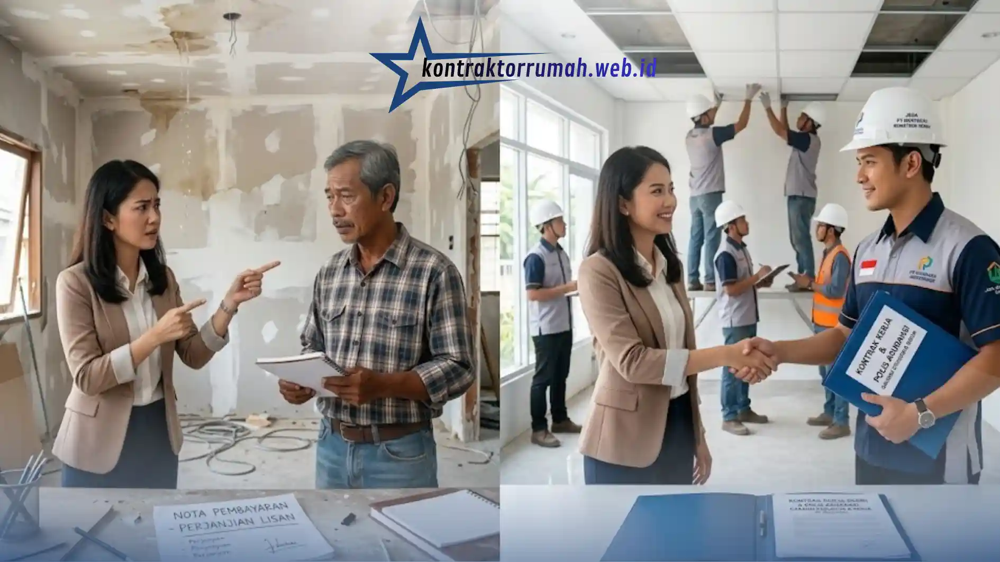

Kontraktor PT adalah badan usaha konstruksi berbadan hukum dengan izin resmi, sedangkan pemborong biasa umumnya perorangan tanpa badan hukum formal. Perbedaan ini berdampak langsung pada keamanan hukum, kualitas pengerjaan, dan perlindungan konsumen selama proyek berlangsung.
Poin Penting
- Kontraktor PT wajib memiliki izin usaha jasa konstruksi resmi, sementara pemborong biasa umumnya beroperasi tanpa badan hukum.
- Tanggung jawab hukum kontraktor PT lebih jelas karena terikat kontrak tertulis dan dapat dituntut secara korporat.
- Pemborong biasa cenderung lebih fleksibel dari sisi biaya, tetapi minim perlindungan bila terjadi sengketa atau cacat bangunan.
- Pemilihan mitra bangun sebaiknya mempertimbangkan skala proyek, anggaran, dan tingkat risiko yang dapat diterima pemilik.
- Kedua opsi punya tempatnya masing-masing tergantung kompleksitas dan nilai proyek.
Apa Itu Kontraktor PT dalam Dunia Konstruksi?
Kontraktor PT adalah perusahaan jasa konstruksi yang berdiri sebagai badan hukum resmi dan terdaftar di instansi terkait. Status badan hukum ini membuat kontraktor PT dapat menandatangani kontrak atas nama perusahaan, bukan atas nama pribadi.
Secara umum, kontraktor PT beroperasi dengan struktur organisasi yang lebih formal, mencakup direktur proyek, tenaga ahli, hingga tim administrasi. Legalitas ini penting karena memberi dasar hukum yang jelas apabila terjadi perselisihan di kemudian hari.
Kontraktor PT umumnya melayani proyek dengan skala menengah hingga besar, seperti pembangunan gedung komersial, renovasi ruko, hingga proyek infrastruktur skala kecil. Karena terikat regulasi, kontraktor PT juga lebih mungkin menyertakan dokumentasi teknis seperti gambar kerja dan rencana anggaran biaya yang terperinci.
Apa Itu Pemborong Biasa dan Bagaimana Cara Kerjanya?
Pemborong biasa adalah individu atau kelompok tukang yang mengerjakan proyek konstruksi tanpa berbadan hukum formal. Model kerja ini banyak digunakan untuk proyek berskala kecil seperti renovasi rumah tinggal atau perbaikan ringan.
Pemborong biasa umumnya mengandalkan reputasi dari mulut ke mulut dan pengalaman lapangan dibandingkan dokumen legal formal. Kesepakatan kerja sering dilakukan secara lisan atau dengan surat perjanjian sederhana yang tidak selalu mengikat secara hukum korporat.
Kelebihan utama pemborong biasa adalah fleksibilitas harga dan proses negosiasi yang lebih personal. Namun, tanpa struktur perusahaan, tanggung jawab hukum jika terjadi kesalahan kerja menjadi lebih sulit dilacak dan ditagih secara formal.
Bagaimana Perbedaan Legalitas Kontraktor PT dan Pemborong?
Legalitas adalah pembeda paling mendasar antara kontraktor PT dan pemborong biasa dalam industri konstruksi. Kontraktor PT wajib mengantongi izin usaha jasa konstruksi, sedangkan pemborong biasa umumnya tidak memerlukannya untuk proyek skala kecil.
Di Indonesia, badan usaha jasa konstruksi umumnya perlu terdaftar melalui sistem perizinan berusaha yang dikelola pemerintah, termasuk klasifikasi dan kualifikasi usaha sesuai jenis pekerjaan yang ditangani. Proses ini mencakup verifikasi tenaga ahli bersertifikat serta pengalaman kerja perusahaan.
Pemborong biasa, di sisi lain, dapat beroperasi tanpa proses perizinan seperti itu selama proyek yang dikerjakan tergolong pekerjaan sederhana dan tidak memerlukan izin mendirikan bangunan yang kompleks. Ketiadaan legalitas formal ini membuat posisi tawar pemilik proyek menjadi lebih lemah apabila terjadi wanprestasi.
Mengapa Keamanan Proyek Berbeda Antara Kontraktor PT dan Pemborong?
Keamanan proyek pada kontraktor PT lebih terjamin karena adanya struktur tanggung jawab hukum, asuransi, dan standar kerja yang terdokumentasi. Pemborong biasa cenderung mengandalkan kepercayaan personal tanpa jaminan formal semacam itu.
Kontraktor PT umumnya menyertakan klausul garansi bangunan dalam kontrak kerja, mencakup jangka waktu tertentu untuk perbaikan cacat konstruksi. Beberapa kontraktor PT juga melengkapi proyek dengan asuransi tanggung jawab pihak ketiga, sehingga risiko kecelakaan kerja atau kerusakan properti pihak lain lebih terlindungi.

Tanpa garansi tertulis dan asuransi tanggung jawab pihak ketiga, risiko sengketa lebih tinggi saat bekerja dengan pemborong biasa.
Pemborong biasa jarang menyediakan jaminan tertulis semacam ini. Jika terjadi kerusakan struktural setelah pekerjaan selesai, pemilik proyek harus bernegosiasi ulang tanpa dasar hukum yang kuat, dan penyelesaian sengketa lebih bergantung pada itikad baik kedua pihak.
Bagaimana Perbandingan Biaya Kontraktor PT dan Pemborong?
Biaya kontraktor PT umumnya lebih tinggi dibandingkan pemborong biasa karena mencakup biaya administrasi, overhead perusahaan, dan margin keuntungan korporat. Pemborong biasa dapat menawarkan harga lebih kompetitif karena struktur biaya yang lebih ramping.
Perbedaan biaya ini biasanya sebanding dengan tingkat kepastian yang didapat. Kontraktor PT menyusun rencana anggaran biaya secara rinci sejak awal, mencakup material, upah tenaga kerja, hingga estimasi waktu pengerjaan, sehingga pemilik proyek memiliki gambaran biaya yang lebih transparan.
Pemborong biasa sering menawarkan sistem harga borongan yang lebih sederhana, namun rincian komponen biaya tidak selalu dijelaskan secara detail. Hal ini dapat menimbulkan biaya tambahan di tengah jalan apabila terjadi perubahan spesifikasi pekerjaan yang tidak dibahas di awal.
| Aspek | Kontraktor PT | Pemborong Biasa |
|---|---|---|
| Legalitas | Izin usaha jasa konstruksi resmi | Umumnya tanpa badan hukum formal |
| Tanggung Jawab Hukum | Terikat kontrak tertulis, dapat dituntut korporat | Sulit dilacak & ditagih secara formal |
| Garansi Pekerjaan | Umumnya tersedia klausul garansi tertulis | Jarang tersedia jaminan tertulis |
| Asuransi Proyek | Sebagian menyertakan asuransi tanggung jawab pihak ketiga | Umumnya tidak tersedia |
| Struktur Biaya | Lebih tinggi (RAB rinci, overhead perusahaan) | Lebih kompetitif, sistem borongan sederhana |
| Skala Proyek Ideal | Menengah-besar (komersial, ruko, gedung) | Kecil (renovasi ringan, perbaikan minor) |
Perbandingan ini bersifat umum dan dapat berbeda tergantung reputasi, pengalaman, serta kesepakatan tertulis yang dibuat di awal proyek.
Kapan Sebaiknya Memilih Kontraktor PT?
Kontraktor PT lebih disarankan untuk proyek berskala menengah hingga besar yang membutuhkan kepastian hukum dan standar kualitas terdokumentasi. Proyek komersial, gedung bertingkat, atau renovasi ruko menjadi kantor umumnya lebih aman ditangani kontraktor berbadan hukum.
Pemilik proyek yang membutuhkan izin mendirikan bangunan resmi, laporan progres tertulis, atau kontrak kerja formal sebaiknya mempertimbangkan kontraktor PT sebagai mitra utama. Kebutuhan ini biasanya muncul pada proyek dengan nilai investasi besar, di mana risiko kerugian finansial akibat kesalahan kerja jauh lebih tinggi.
Kapan Pemborong Biasa Menjadi Pilihan yang Masuk Akal?
Pemborong biasa dapat menjadi pilihan tepat untuk pekerjaan berskala kecil dengan anggaran terbatas, seperti perbaikan ringan atau renovasi minor rumah tinggal. Fleksibilitas harga dan proses kerja yang cepat menjadi nilai tambah utama.
Untuk pekerjaan seperti pengecatan ulang, perbaikan atap ringan, atau renovasi kamar mandi berskala kecil, penggunaan pemborong biasa umumnya sudah memadai tanpa memerlukan struktur formal kontraktor PT. Pemilik proyek tetap disarankan membuat perjanjian tertulis sederhana meski bekerja dengan pemborong perorangan, untuk mengurangi risiko kesalahpahaman.
Kesalahan Umum Saat Memilih Antara Kontraktor PT dan Pemborong
Kesalahan paling umum adalah memilih berdasarkan harga termurah tanpa mempertimbangkan legalitas dan tingkat risiko proyek. Kesalahan lain adalah tidak membuat perjanjian tertulis meski nilai proyek cukup besar.
Beberapa kesalahan yang sering terjadi meliputi:
- Tidak memverifikasi legalitas atau rekam jejak kontraktor sebelum menandatangani kontrak.
- Mengabaikan detail rencana anggaran biaya sehingga muncul biaya tambahan di tengah proyek.
- Tidak menyepakati klausul garansi atau jangka waktu perbaikan cacat bangunan.
- Memilih pemborong tanpa perjanjian tertulis untuk proyek bernilai besar.
- Tidak mempertimbangkan asuransi proyek untuk pekerjaan berisiko tinggi.
Kontraktor PT menawarkan kepastian hukum, standar kerja terdokumentasi, dan perlindungan formal yang lebih kuat, dengan konsekuensi biaya yang umumnya lebih tinggi. Pemborong biasa menawarkan fleksibilitas biaya dan kecepatan kerja, tetapi dengan risiko perlindungan hukum yang lebih rendah.
Pemilihan mitra bangun sebaiknya disesuaikan dengan skala proyek, nilai investasi, dan tingkat risiko yang dapat diterima pemilik. Untuk proyek renovasi ruko menjadi kantor atau pembangunan berskala menengah ke atas, konsultasi dengan kontraktor berbadan hukum umumnya menjadi langkah yang lebih aman.
Konsultasikan Pemilihan Kontraktor Bersama Kami
Tim Kontraktor Rumah beroperasi sebagai kontraktor PT berbadan hukum resmi dengan izin usaha jasa konstruksi yang telah teruji sejak 2008. Setiap proyek dilengkapi kontrak kerja tertulis, RAB transparan, serta garansi tertulis atas hasil pekerjaan.
Jika Anda sedang mempertimbangkan mitra bangun untuk proyek renovasi ruko, pembangunan gedung komersial, atau renovasi berskala menengah ke atas, tim kami siap melakukan konsultasi awal untuk memastikan proyek Anda berjalan aman secara hukum dan teknis.
FAQ Seputar Kontraktor PT vs Pemborong Biasa
Memilih antara kontraktor PT dan pemborong biasa bukan sekadar soal harga, melainkan soal seberapa besar risiko hukum dan teknis yang siap Anda tanggung sepanjang proyek berlangsung.